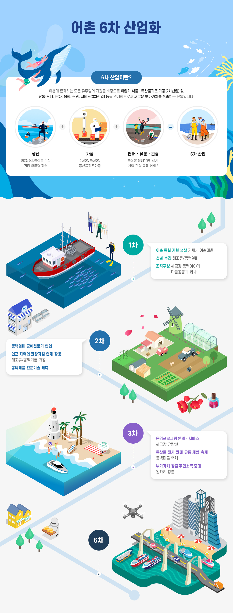
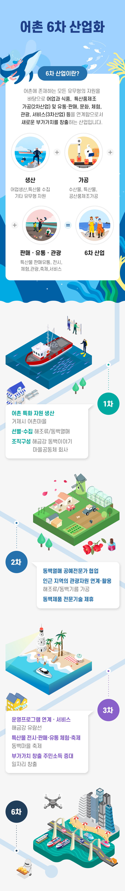

어촌6차산업화
- 홈
- 사업소개
- 활력있는 어촌
- 어촌6차산업화
추진계획
- (2016년 5월) 고창 두어마을, 남해 전도마을 어촌6차산업화 시범마을(2차) 선정
- (2016년 12월) 고창 두어마을 업무협약 체결(고창군)
- (2016년 12월) 남해 전도마을 업무협약 체결(남해군)
- (2018년 2월) 고창 두어마을 기본계획 승인
- (2018년 2월) 남해 전도마을 기본계획 승인
- (2018년 12월) 고창 두어마을 시행계획 승인
- (2019년 2월) 고창 두어마을 준공완료
- (2019년 11월) 남해 전도마을 착공
- (2020년 12월) 남해 전도마을 준공완료
추진체계


어촌 6차 산업화
6차 산업이란?
어촌에 존재하는 모든 유무형의 자원을 바탕으로 어업과 식품, 특산품제조 가공(2차산업) 및 유통·판매, 문화, 체험, 관광, 서비스(3차산업) 등을 연계함으로서 새로운 부가가치를 창출하는 산업입니다.
- 생산 - 어업생산,특산물 수집 기타 유무형 자원
- 가공 - 수산물, 특산물, 공산품제조가공
- 판매 · 유통 · 관광 - 특산물 판매유통, 전시, 체험,관광,축제,서비스
- 6차 산업
1차
- 어촌 특화 자원 생산 - 거제시 어촌마을
- 선별·수집 - 해조류/동백열매
- 조직구성 - 해금강 동백이야기 마을공동체 회사
2차
- 동백열매 공예전문가 협업
- 인근 지역의 관광자원 연계·활용 - 해조류/동백기름 가공
- 동백제품 전문기술 제휴
3차
- 운영프로그램 연계 · 서비스 - 해금강 유람선
- 특산물 전시·판매·유통 체험·축제 - 동백마을 축제
- 부가가치 창출 주민소득 증대 - 일자리 창출
6차